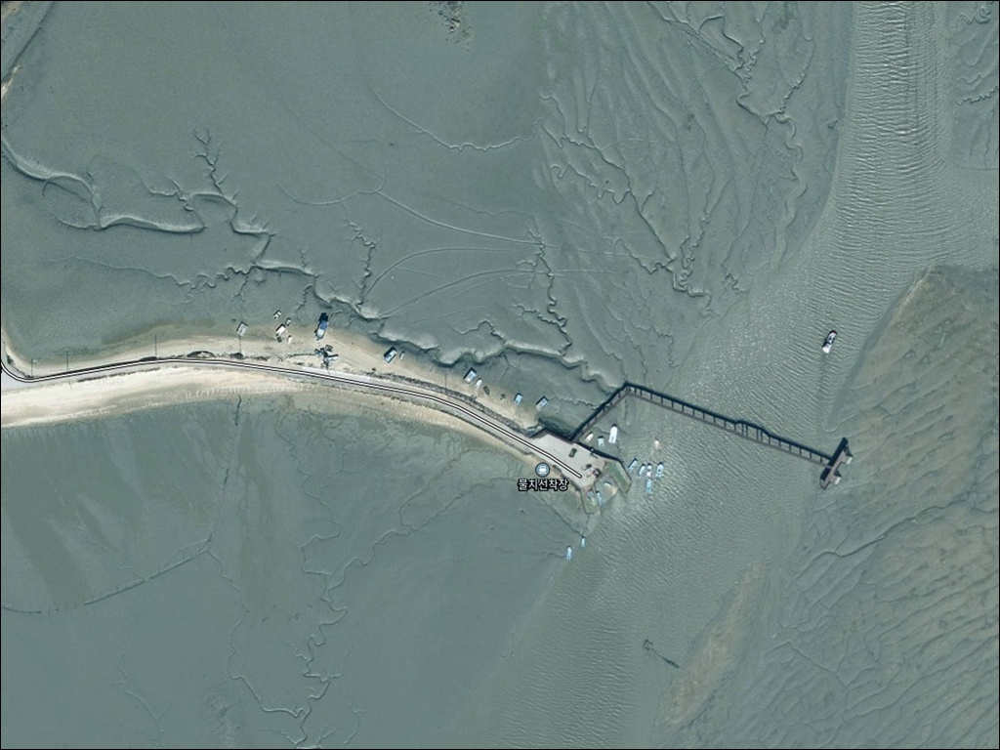
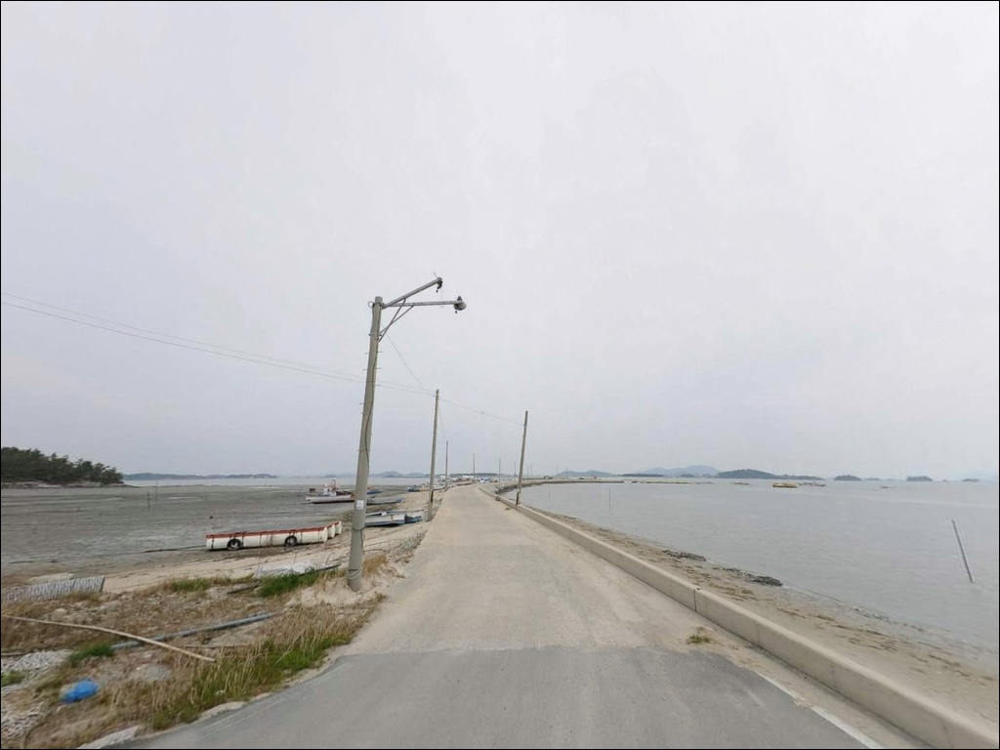
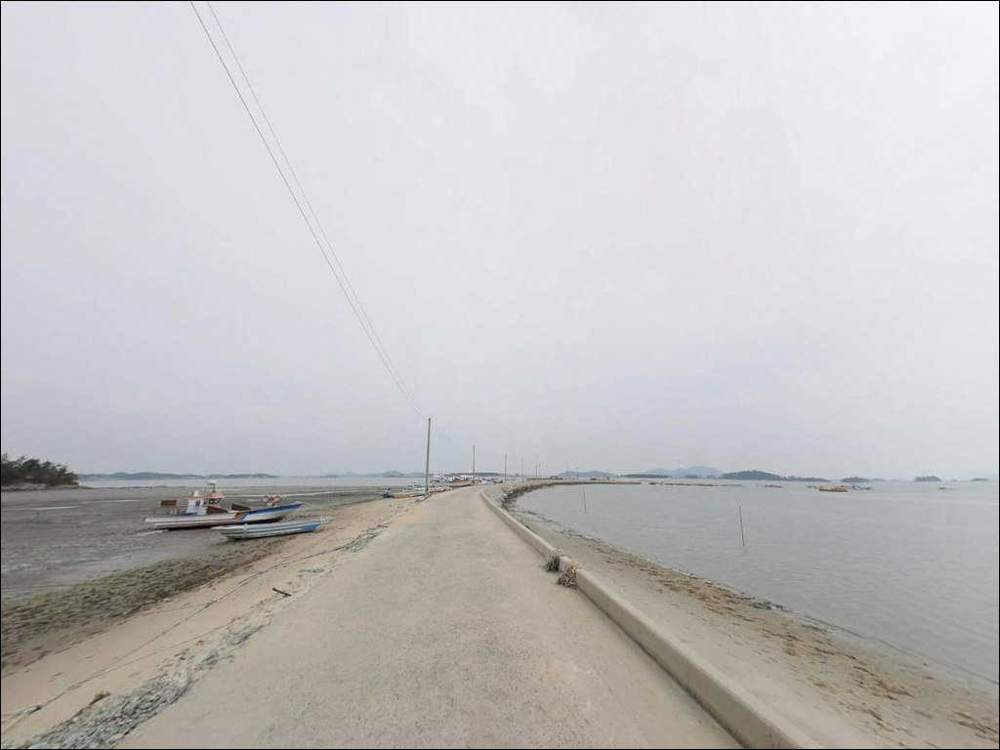
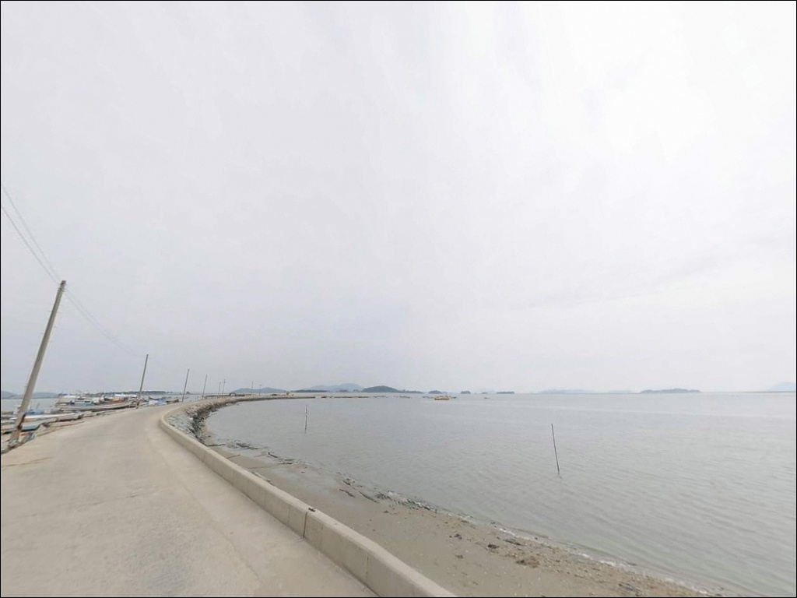
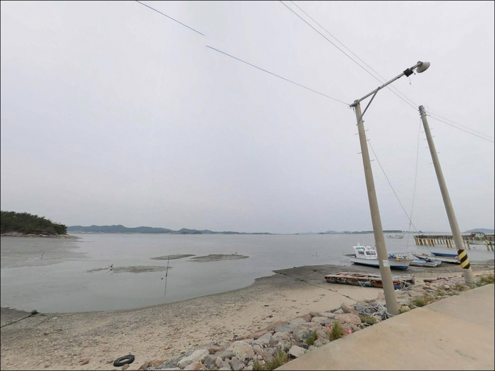
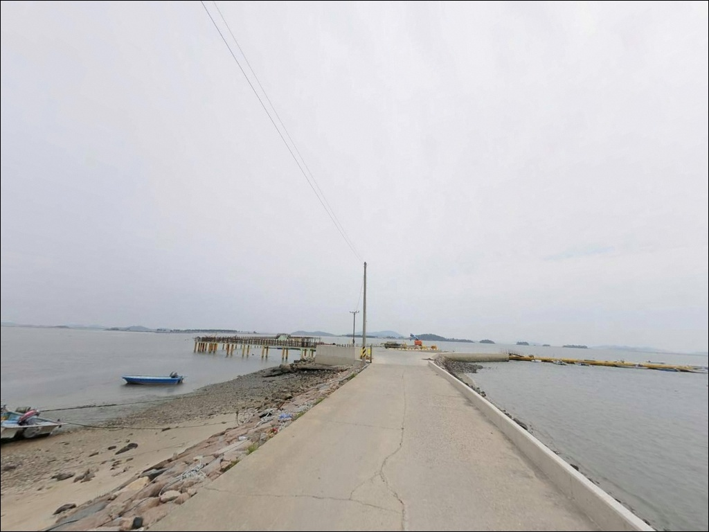
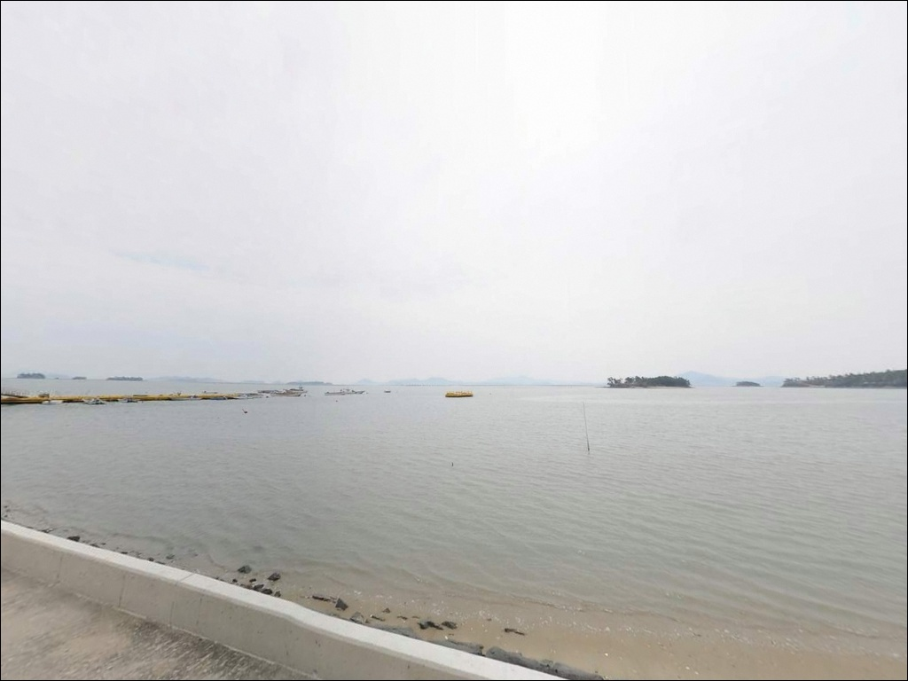
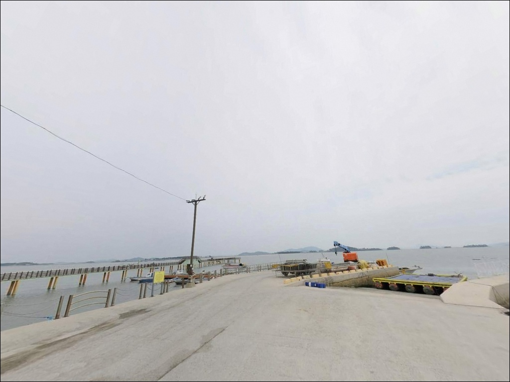
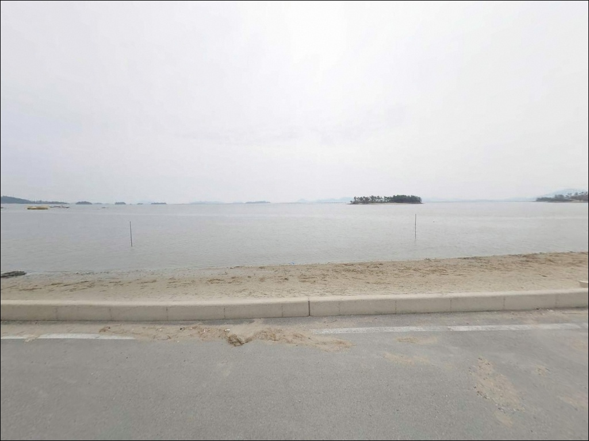

불치선착장, 증도 전남 신안군 자연 그대로의 분위기에서 차박, 낚시를 즐기기 좋은 포인트
이 페이지에는 광고(제휴 링크 포함)가 있으며, 광고 링크를 통해 구매하면 운영자가 판매 수익 또는 수수료를 받을 수 있습니다. 포인트 사진: 카카오맵 스카이뷰·로드뷰. 이 페이지의 지도·사진 이미지는 카카오맵의 실제 서비스 이미지와 다를 수 있습니다.


포인트 안내
불치선착장
전남 신안군 증도면 우전리 432-13
서해 갯벌 구조의 선착장 포인트는
만조 전후 타이밍에 조과 가능성이 집중됩니다.
물때 계산 없이 간조 시간대에 도착하면
선착장 앞 갯벌이 드러나
투척 가능한 수심 자체가 크게 줄어들고,
사리 전후 강한 조류는
어떤 채비를 써도 바닥을 잡기 어렵게 만드는
구조의 포인트입니다.
전남 신안군 증도면 우전리,
불치선착장은 우전해수욕장 남단과 연결되는
소형 어촌 포구입니다.
갯벌과 수로가 복잡하게 얽힌
서해 전형의 내만형 지형으로,
대형 방파제 포인트보다는
조용하고 소소한 생활 낚시 스타일에
어울리는 분위기를 가진 곳입니다.
이 글은 불치선착장의
진입 동선, 차박 여건, 지형 특성,
낚시 방식 적합성에 집중합니다.
조황 단정이나 특정 어종 보장은
이 글의 범위에 포함되지 않습니다.

1. 증도 진입과 불치선착장 접근 동선
증도는 해제면에서 사옥도를 거쳐
다리와 노두길로 연결된 차량 진입 가능한 섬입니다.
섬 안으로 들어가는 진입 자체는
일반 승용차 기준으로 크게 어렵지 않지만,
불치선착장까지 이어지는 구간은
성격이 달라집니다.
우전리 마을 안쪽에서 연결되는
1차선 포장도로를 따라 진입하는 구조로,
마을 골목길 형태의 좁은 노면이 이어집니다.
회차 공간이 충분하지 않은 선착장 특성상
대형 SUV나 캠핑 장비를 실은 차량이라면
출발 전 위성지도로 진입로 폭과
회차 가능 구간을 반드시 확인해야 합니다.
야간 첫 진입은 특히 주의가 필요합니다.
주차는 선착장 입구 인근 공터를 활용하는 방식이
일반적이며, 1~2대 수용이 가능한 수준입니다.
선착장은 어민의 생업 공간이므로
어선 작업 동선과 접안부를 가로막지 않는 자리를
먼저 확인하고 차를 세워야 합니다.

2. 차박 환경과 야간 체류 여건
불치선착장은 민가와 인접한 소규모 어촌 선착장 구조입니다.
완전히 고립된 독립형 포인트라기보다는
마을 생활권과 맞닿아 있는 환경이라
야간 프라이버시가 완전하지 않은 여건임을
사전에 감안해야 합니다.
차박이란 차량을 숙박 공간으로 활용하며
현장에서 하룻밤 머무는 여행 방식입니다.
불치선착장은 주차 공간 자체가 협소한 탓에
차박을 메인 목적으로 삼기보다는
낚시 후 조용히 차 안에서 대기하는
보조 용도로 접근하는 편이 현실에 맞습니다.
야간에는 가로등이 최소 수준에 머물러
전체적으로 어두운 편입니다.
헤드랜턴과 개인 조명은 기본 준비물입니다.
서해안 특성상 기상 조건에 따라
바람 영향을 받는 경우가 있어
출발 당일 아침 기상 예보를 다시 확인하는 것이
불필요한 출조 낭비를 막는 방법입니다.


3. 주변 편의시설 및 인프라 현황
불치선착장 바로 인근에는
편의점이나 마트를 기대하기 어렵습니다.
완전 자급 체제로 진입하는 것이
현실적인 준비 방식이며,
식수, 낚시 소품, 식량, 여분 채비, 연료 모두
출발 전에 갖춰야 합니다.
반경 3km권으로 이동하면
우전해수욕장 인근의 엘도라도 리조트 구역에
편의시설이 갖춰져 있습니다.
우전해수욕장 공중화장실은
시즌별로 운영 여부가 달라질 수 있어
출발 전 확인이 필요합니다.
증도는 유네스코 생물권 보전지역이자
국가 습지보호지역으로 지정된 갯벌을 품고 있습니다.
갯벌 진입이나 채취 행위에는
별도 규정이 적용될 수 있으므로
현장 안내판과 관할 기관 규정을
출발 전 확인하는 것이 기본입니다.

4. 간조에 도착하면 낚시 자리가 사라지는 이유
불치선착장 방문에서 가장 먼저 확인할 것은
물때입니다.
서해는 조수 간만 차가 매우 크고,
증도 일대는 갯벌과 수로가 복잡하게 얽혀
조류 변화가 뚜렷하게 나타나는 해역입니다.
바다타임에서 이 일대 물때를 확인하고
만조 전후 2~3시간을 핵심 타이밍으로 잡는 것이
기본 판단 기준입니다.
간조 시간대에는 선착장 앞 갯벌이 드러나
투척 가능한 수심이 크게 줄어들고,
사리 전후에는 조류가 거세져
무거운 봉돌을 써도 채비 컨트롤이 어려워집니다.
조금 전후 시기를 방문 날짜로 맞추면
비교적 안정적인 조건에서 낚시를 즐길 수 있습니다.
선착장은 어민의 생업 공간이라는 점도
항상 염두에 두어야 합니다.
어선 입출항 방해, 어구·그물 접촉,
야간 발판 확인 없는 이동은
안전사고와 이웃 갈등의 원인이 됩니다.
구명조끼 착용과 쓰레기 수거는
이 포인트를 찾는 낚시인의 기본 매너입니다.

5. 지형 기반 낚시 여건 분석
불치선착장은 갯벌과 모래가 혼합된 바닥 구조의
소형 포구 형태 포인트입니다.
선착장 끝단 방향으로 수심이 다소 깊어지는 구간이 형성되며,
이 구간이 원투 채비가 힘을 발휘하는
핵심 포인트가 됩니다.
선착장 측면과 배 정박 라인 주변도
탐색해볼 만한 포인트 구간입니다.
증도 연안은 수심 15m 내외의 수로가
섬 주변을 따라 형성되는 구조의 해역입니다.
불치선착장 바로 앞은 갯벌 지형 비율이 높지만,
만조 시 수심이 확보되면
선착장 끝단에서 수로 방향으로
채비를 보낼 수 있는
구조적 여건을 갖추고 있습니다.
조류는 외해 방파제와 달리
완만한 흐름이 기본 패턴입니다.
증도 불치선착장은 대형 방파제가 아닌
소형 포구 구조로,
원투낚시와 찌낚시 중심의 생활 낚시형 접근이
맞는 포인트입니다.
대물보다는 다양한 잡어류와 소형 어종을
소소하게 즐기는 스타일에 어울리는 지형이며,
최신 조황은 출조 전에 반드시 검색해 보시기 바랍니다.


6. 포인트에 어울리는 낚시 스타일
원투낚시가 이 포인트의 지형 조건에 가장 잘 맞는
낚시 방식입니다.
참갯지렁이나 청갯지렁이를 미끼로
선착장 끝단에서 수로 방향으로 멀리 던지면
딱돔(군평선이)·보리멸·붕장어류의
입질을 기대해 볼 수 있는 지형 조건입니다.
만조 전후 조류가 느려지는 타이밍이
채비 운용에 가장 적합합니다.
생활찌낚시도 이 포인트에 어울리는 방식입니다.
내항 쪽 수면이 잔잔한 구간을 활용해
선착장 주변 소형 어종을 노리는 스타일로,
가족 단위나 부담 없는 나들이 낚시에 맞는
접근 방식입니다.
수온이 오르는 봄~가을 시기에
활성도가 높아지는 경향이 있습니다.
야간이나 해질녘에는
소형 지그헤드를 이용한 라이트 루어가
선착장 주변 소형 어종 탐색에 적합합니다.
증도 연안 해역은 농어 소형 개체와 숭어도
기대해볼 수 있는 구조의 해역이며,
야간 루어 시도 전 반드시
발판 상태를 확인해야 합니다.

7. 대안 포인트와 플랜 B 동선
불치선착장 조건이 여의치 않을 때
가장 먼저 이동할 대안은
증도항(지신개선착장)입니다.
불치선착장보다 규모가 크고
수심이 안정적으로 확보되는 구조로,
원투낚시부터 루어까지
다양한 낚시 스타일로 운용이 가능한
포인트입니다.
증도 내에서 움직일 여건이 생기면
왕바위선착장도 고려할 수 있는 대안입니다.
우전리 일대에 위치하며
불치선착장에 비해 규모 면에서
더 넓은 공간이 갖춰진 포인트입니다.
다만 낚시 가능 여부는
방문 전 현장 확인이 필요합니다.
차박 여건이 부족하다고 판단되면
우전해수욕장 주차장이 현실적인 대안입니다.
화장실 접근성이 상대적으로 낫고
주차 공간이 넓어
낚시는 선착장, 숙박은 해수욕장으로
나누는 동선도 충분히 유효합니다.

조용한 갯벌 선착장을 찾는다면
불치선착장이 맞는 자리입니다
대형 방파제의 활기보다
조용한 갯벌 선착장에서
원투 채비를 던져두고 느긋하게 기다리는
생활 낚시 스타일을 선호한다면
불치선착장의 분위기가 잘 맞는 곳입니다.
딱돔·보리멸·붕장어류를 대상으로
만조 전후 타이밍에 집중하는 방식이
이 포인트를 제대로 활용하는 방법입니다.
반면 본격적인 대물 낚시가 목적이거나
편의시설이 갖춰진 환경을 원한다면
증도항이나 규모 있는 방파제를
메인 포인트로 잡는 편이 현실적입니다.
불치선착장은 아직 온라인 정보가 많지 않은
조용한 포인트인 만큼,
증도 초행이라면 사전 답사 목적으로
먼저 들러보는 방식도 좋은 접근입니다.
물때를 맞추고, 자급 준비를 갖추고,
진입로 여건을 사전에 확인하는 것.
이 세 가지를 갖추고 간다면
서해 갯벌 선착장의 정취와 함께
낚시와 차박을 조용하게 즐길 수 있는
출조가 됩니다.